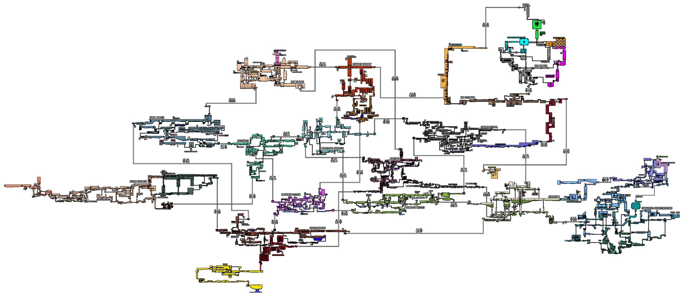

这是一个rainworld本体、dlc和部分mod不同区域的链接记录，并且以求生者时间线为主，本网页旨在于求生者时间线下找到部分mod的联通方式和地图的辅助。
本网页部分mod中文名可能存在问题，可以参考英文。标红色的地区为暂未收录的区域。

| 区域 | 链接区域 | mod链接区域 |
| 郊区 | 工业区、阴影城堡、农场阵列 | |
| 工业区 | 郊区、阴影城堡、农场阵列、垃圾堆、管道堆场 | 侵蚀炼油厂 |
| 排水系统 | 郊区、垃圾堆、地下（过滤系统）、烟囱天棚（污水坑） | 葱郁泥沼 |
| 垃圾堆 | 工业区、排水系统、海岸线、阴影城堡 | 不毛之地、朝圣者天路 |
| 海岸线 | 垃圾堆、管道堆场、地下、阴影城堡、被浸没的巨构建筑、被浸没的巨构建筑（严寒巢穴，不可到达）、外缘（支架，已断裂） | Undersea、旱漠 |
| 阴影城堡 | 工业区、海岸线、垃圾堆、外缘（支架） | 葱郁泥沼、嚎叫裂隙、Undersea |
| 外缘 | 阴影城堡（记忆陵墓）、海岸线（绝壁）、烟囱天棚、五块卵石、大都会（仅炸咪） | 焦土区、朝圣者天路 |
| 阴影城堡 | 外缘（下悬架、墙） | 焦土区、朝圣者天路 |
| 烟囱天棚 | 外缘（墙）、工业区、天空群岛、排水系统 | |
| 天空群岛 | 烟囱天棚、农场阵列、管道堆场 | 通讯塔 |
| 农场阵列 | 烟囱天棚、郊区、地下 | 不毛之地、旱漠 |
| 地下 | 农场阵列、海岸线、排水系统、外层空间（仅白黄、饕餮） | 嚎叫裂隙、通讯塔、远岸 |
| 管道堆场 | 海岸线、天空群岛、工业区、地下（过滤系统） | 珊瑚洞穴 |
| 被浸没的巨构建筑 | 海岸线、海岸线（仰望皓月，仅溪流可由此通过） | 珊瑚洞穴 |
| 外层空间 | 地下、郊区（仅矛师开头剧情经过） |
| mod区域 | 链接区域 | mod链接区域 |
| 珊瑚洞穴Corol_Cave | 被浸没的巨构建筑、管道堆场 | 空中花园、风暴海岸、以太山脊 |
| 空中花园Hanging_Garden | 珊瑚洞穴、葱郁泥沼、蒸汽大厦、保护区 | |
| 葱郁泥沼Lush_Mire | 排水系统、阴影城堡 | 珊瑚洞穴 |
| 侵蚀炼油厂Eroded_Refinery | 工业区 | 通讯塔、嚎叫裂隙 |
| 嚎叫裂隙Howling_Rift | 阴影城堡（记忆陵墓）、地下 | 侵蚀炼油厂、UnderBelly、猩红之地 |
| 通讯塔The_Mast | 天空群岛、地下 | 侵蚀炼油厂、焦土区、不毛之地、Undersea、Overgrown_Urban、镀金圣殿 |
| 不毛之地Badlands | 垃圾堆、农场阵列 | 通讯塔 |
| 焦土区Scorched_District | 五块卵石、外缘（墙） | 通讯塔、朝圣者天路、Barren_Streets |
| 朝圣者天路Pilgrim_Ascent | 外缘（支架）、五块卵石、垃圾堆 | 焦土区、远岸 |
| Undersea | 海岸线、阴影城堡（记忆陵墓） | 通讯塔 |
| 旱漠Arid_Barrens | 农场阵列、海岸线 | 镀金圣殿、神圣石窟 |
| 镀金圣殿Gilded_Sanctuary | 旱漠、通讯塔、蒸汽大厦、necropolis | |
| Overgrown_Urban | 通讯塔、旱漠、地下通道 | |
| 远岸Far_Shore | 地下 | 朝圣者天路、苔藓原野、隐秘通径、necropolis |
| 苔藓原野Moss_Fields | 夜光湾、灰色城市、Data_Manifolds | |
| 夜光湾Luminous_Cove | 追逐清风、苔藓原野、necropolis | |
| 灰色城市Luminous_Cove | 追逐清风、苔藓原野、necropolis | |
| 追逐清风Chasing_Wind地图 | 灰色城市、夜光湾 |
本网页参考信息和图片来源：雨世界wiki